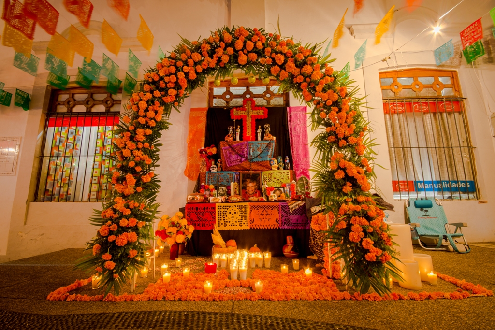
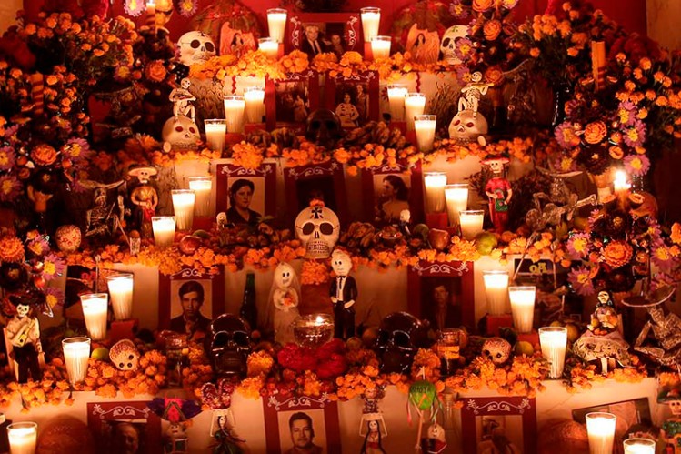
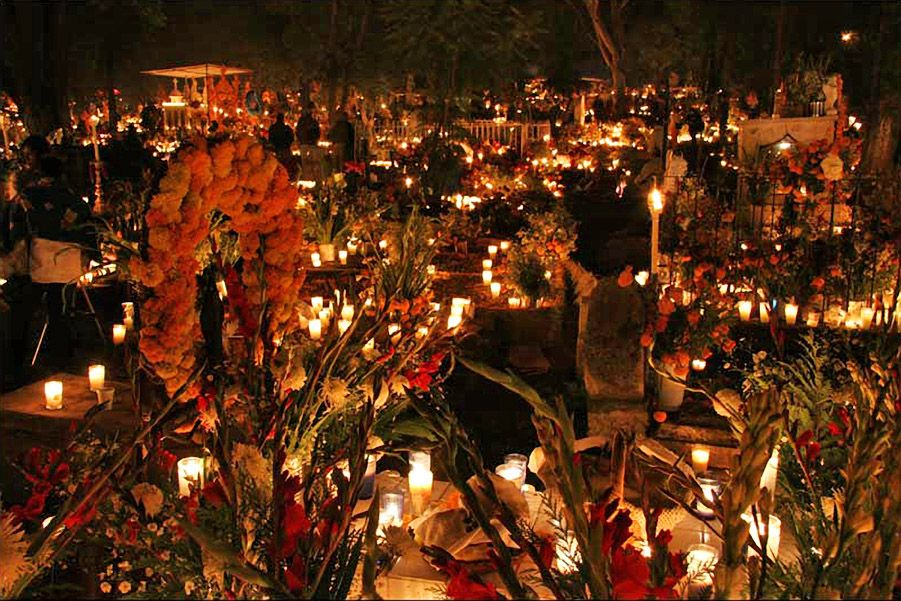
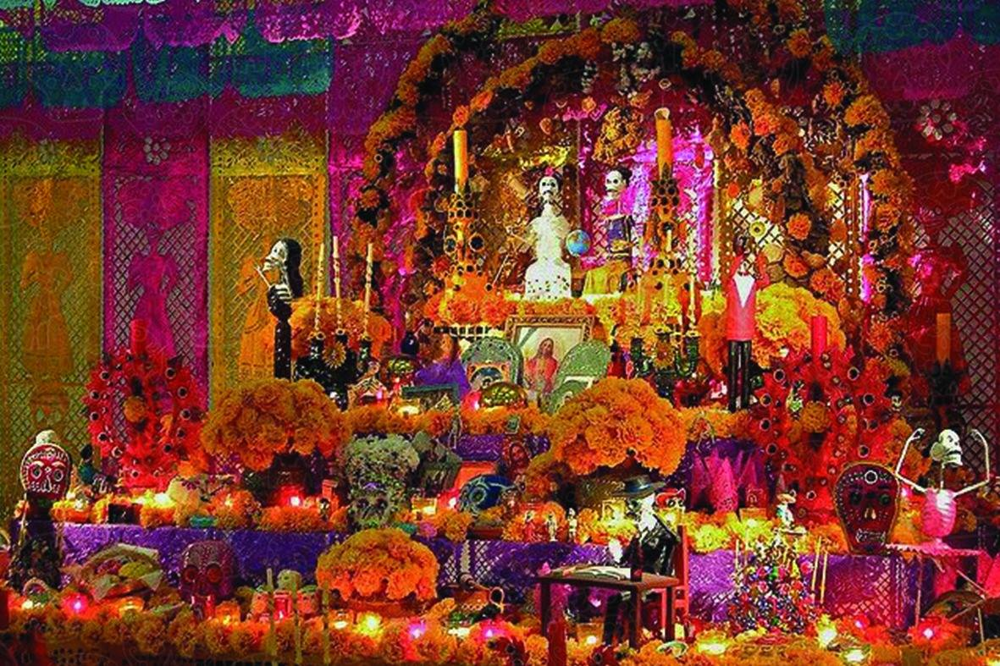

Dia de muertos
¿Que es?




Celebración de día de muertos.
De acuerdo a la Iglesia Católica, los días señalados para honrar a los muertos son el 1 y 2 de noviembre, días de Todos los Santos y Fieles Difuntos, respectivamente, sin embargo, para quienes siguen las costumbres indígenas, la celebración comienza la última semana de octubre y finaliza los primeros días del mes de noviembre.
Así, en algunas regiones los festejos comienzan el 25 o 28 de octubre y finalizan, dependiendo de las costumbres locales, el 2 o 3 de noviembre, Cuenta la historia y la tradición que ha pasado entre generaciones, que las Ánimas llegan en orden a las 12 horas de cada día, siendo el orden más generalizado:
- 28 de octubre: día en que se recibe a los que murieron a causa de un accidente y nunca pudieron llegar a su destino, o bien, los que tuvieron una muerte repentina y violenta.
- 29 de octubre: día que se reciben a los ahogados.
- 30 de octubre: a las ánimas solas y olvidadas, que no tienen familiares que los recuerden; los huérfanos y los criminales.
- 31 de octubre: a los limbos, los que nunca nacieron o no recibieron el bautismo.
- 1 de noviembre: a los niños, también referidos como "Angelitos".
- 2 de noviembre: a los muertos adultos.
Creencias y ofrendas
Sin embargo, este orden varía en cada región. Por ejemplo, los días 29 y 30 de octubre se celebra a los fallecidos nuevos, de no más de un año; considerando además, que los que murieron el mes anterior a la celebración no reciben ofrenda, pues carecen de tiempo para obtener permiso de volver al mundo terrenal. El día 31 se espera a nuestros ancestros, a los muertos de los muertos, a los que no conocimos.
Otro ejemplo es que el 2 de noviembre se reciben a todas las ánimas, en otros lugares se rigen por el calendario maya y la celebración del Día de Muertos va del 15 de octubre al 2 de noviembre.
El elemento más representativo de la festividad de Día de Muertos son los altares con sus ofrendas, una representación de nuestra visión sobre la muerte, llena de alegorías y de significados. En los lugares donde la tradición está más arraigada, los altares comienzan a tomar forma el 28 de octubre y llegan a su máximo esplendor el día 2 de noviembre.
El elemento más representativo de la festividad de Día de Muertos son los altares con sus ofrendas, una representación de nuestra visión sobre la muerte, llena de alegorías y de significados. En los lugares donde la tradición está más arraigada, los altares comienzan a tomar forma el 28 de octubre y llegan a su máximo esplendor el día 2 de noviembre.
Para el primero de noviembre se pone la comida dulce, el chocolate, la calabaza en tacha y las flores. El día mayor se coloca la comida preferida de los difuntos, el tequila, el mezcal y la cerveza, El elemento que no falta en ninguno de estos días es el copal encendido.
Altares, su significado
Tradicionalmente los altares tienen niveles y dependiendo de las costumbres familiares se usan dos, tres o siete niveles.
Los altares de dos niveles, los más comunes hoy en día, representan la división del cielo y de la tierra. Los de tres niveles representan el cielo, la tierra y el inframundo, aunque también se les pueden referir como los elementos de la Santísima Trinidad.
Los altares de dos niveles, los más comunes hoy en día, representan la división del cielo y de la tierra. Los de tres niveles representan el cielo, la tierra y el inframundo, aunque también se les pueden referir como los elementos de la Santísima Trinidad.
Cada escalón, es cubierto con manteles, papel picado, hojas de plátano, palmillas y petates de tule; cada escalón tiene un significado distinto.
Los escalones:
- En el más alto se coloca la imagen del santo de devoción de la familia.
- El segundo está destinado a las ánimas del purgatorio.
- En el tercero se coloca la sal símbolo de la purificación.
- En el cuarto se coloca el pan, que se ofrece como alimento y como consagración.
- En el quinto se colocan las frutas y los platillos preferidos por los difuntos.
- En el sexto van las fotografías de los difuntos a los que se les dedica el altar.
- En el séptimo, en contacto con la tierra, se forma una cruz formada por flores, semillas o frutas.
Cada elemento puesto en el altar tiene su propio significado e importancia. El copal y el incienso representan la purificación del alma y su aroma es capaz de guiar a los difuntos hacia su ofrenda.
Arco, hecho con carrizo y decorado con flores, se ubica por encima del primer nivel del altar y simboliza la puerta que conecta al mundo de los muertos; es considerado el octavo nivel que se debe seguir para llegar al Mictlán.
el papel picado y sus colores representan la pureza y el duelo, actualmente se adornan con calaveras y otros elementos de la cultura popular; en la época prehispánica, se utilizaba el papel amate y en él se dibujaban diferentes deidades.
A través de las velas, veladoras y cirios está presente el fuego, que se ofrenda a las ánimas para alumbrar su camino de vuelta a su morada. Es costumbre, que se coloquen cuatro veladoras, representando una cruz y los puntos cardinales, pero también en algunas comunidades, cada vela representa un difunto, por lo que el número de velas dependerá de las almas que reciba la familia.
En las ofrendas nunca puede faltar el agua, la fuente de vida, pues es necesaria para calmar la sed del visitante después de su largo recorrido. Tampoco podemos olvidarnos de la sal, elemento de purificación que sirve para que el alma no se corrompa en su viaje de ida y vuelta.
El pan de muerto, tiene un doble significado. Por un lado, representa la cruz de Cristo; por otro, las tiras sobre la corteza representan los huesos y el ajonjolí, las lágrimas de las ánimas que no han encontrado el descanso.
La flor de cempasúchil, la nube y el moco de pavo son las flores que decoran las ofrendas y los cementerios; al igual que el copal, se cree que su aroma atrae y guía a las almas de los muertos.
Las calaveritas de azúcar, chocolate y amaranto, así como otros alfeñiques, hacen alusión a la muerte y de cierta forma, se burlan de ella, siendo costumbre escribirles en la frente el nombre del difunto.
Visita al cementerio
Durante estos días de festividades se deben visitar las tumbas de los difuntos para limpiarlas y arreglarlas con flores y veladoras. Esta visita, es una muestra más de la riqueza y diversidad de la tradición, en algunos lugares, es costumbre colocar una ofrenda sobre el sepulcro y pasar allí la noche en vela con la familia reunida.
No faltan los rezos ni la música, todos rodean la tumba para orar por sus difuntos, tras colocar una ofrenda sobre los sepulcros, alimentos que eran del agrado de sus seres queridos, flores y numerosas velas; pasan las horas en calma, orando y observando la intensidad de la luz de las velas.
La celebración de Día de Muertos tiene un principio común: la familia se reúne para dar la bienvenida a las ánimas, colocar los altares y las ofrendas, visitar el cementerio y arreglar las tumbas, asistir a los oficios religiosos, despedir a los visitantes del más allá y después sentarse a la mesa para compartir los alimentos, que tras haber sido levantada la ofrenda, han perdido su aroma y sabor, pues los difuntos se han llevado su esencia.
“El Día de Muertos retoma toda una tradición profunda, donde se guarda el culto a los difuntos con alegría, porque la materia se desintegra, pero comienza el principio eterno”.